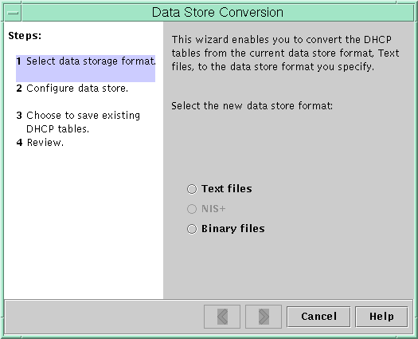

Previous
Previous
Deleting DHCP Options
You cannot delete standard DHCP options. However, if you have defined options for your DHCP service, you can delete these options by using DHCP Manager or the dhtadm command.
 How to Delete DHCP Options (DHCP Manager)
How to Delete DHCP Options (DHCP Manager)
In DHCP Manager, select the Options tab.
See How to Start and Stop DHCP Manager for information about DHCP Manager.
Select the option that you want to delete.
Choose Delete from the Edit menu.
The Delete Option dialog box opens.
Select Notify DHCP Server of Change if you are finished deleting options.
This selection tells the DHCP server to reread the dhcptab table to put the change into effect immediately after you click OK.
Click OK.
How to Delete DHCP Options (dhtadm)
Become superuser or assume a role or user name that is assigned to the DHCP Management profile.
For more information about the DHCP Management profile, see Setting Up User Access to DHCP Commands.
Roles contain authorizations and privileged commands. For more information about roles, see "Configuring RBAC (Task Map)" in System Administration Guide: Security Services.
Delete a DHCP option by typing a command using the following format:
# dhtadm -D -s option-name -g
Modifying the Solaris DHCP Client's Option Information
If you add a new DHCP option to your DHCP server, you must add a complementary entry to each DHCP client's option information. If you have a DHCP client that is not a Solaris DHCP client, refer to that client's documentation for information about adding options or symbols.
On a Solaris DHCP client, you must edit the /etc/dhcp/inittab file and add an entry for each option that you add to the DHCP server. If you later modify the option on the server, you must also modify the entry in the client's /etc/dhcp/inittab file.
Refer to the dhcp_inittab(4) man page for detailed information about the syntax of the /etc/dhcp/inittab file.
Note - If you added DHCP options to the dhcptags file in a previous Solaris release, you must add the options to the /etc/dhcp/inittab file. See DHCP Option Information for more information.
Supporting Solaris Network Installation With the DHCP Service
You can use DHCP to install the Solaris Operating System on certain client systems on your network. Only sun4u-based systems and x86 systems that meet the hardware requirements for running the Solaris OS can use this feature. For information about using DHCP to automatically configure client systems for the network as they boot, see Chapter 2, "Preconfiguring System Configuration Information (Tasks)," in Solaris Express Installation Guide: Network-Based Installations.
DHCP also supports Solaris client systems that boot and install remotely from servers across a wide area network (WAN) using HTTP. This method of remote booting and installing is called the WAN boot installation method. Using WAN boot, you can install the Solaris OS on SPARC based systems over a large public network where the network infrastructure might be untrustworthy. You can use WAN boot with security features to protect data confidentiality and installation image integrity.
Before you can use DHCP for booting and installing client systems remotely using WAN boot, the DHCP server must be configured to supply the following information to clients:
The proxy server's IP address
The location of the wanboot--cgi program
For details about configuring the DHCP server to provide this information, see Chapter 2, "Preconfiguring System Configuration Information (Tasks)," in Solaris Express Installation Guide: Network-Based Installations. For information about booting and installing client systems with a DHCP server across a WAN, see Chapter 9, "WAN Boot (Overview)," in Solaris Express Installation Guide: Network-Based Installations.
For information about supporting diskless clients, see Supporting Remote Boot and Diskless Boot Clients (Task Map).
Supporting Remote Boot and Diskless Boot Clients (Task Map)
The Solaris DHCP service can support Solaris client systems that mount their operating system files remotely from another machine (the OS server). Such clients are often called diskless clients. Diskless clients can be thought of as persistent remote boot clients. Each time a diskless client boots, the client must obtain the name and IP address of the server that hosts the client's operating system files. The diskless client can then boot remotely from those files.
Each diskless client has its own root partition on the OS server, which is shared to the client host name. The DHCP server must always return the same IP address to a diskless client. That address must remain mapped to the same host name in the name service, such as DNS. When a diskless client receives a consistent IP address, the client uses a consistent host name, and can access its root partition on the OS server.
In addition to providing the IP address and host name, the DHCP server can supply the location of the diskless client's operating system files. However, you must create options and macros to pass the information in a DHCP message packet.
The following task map lists the tasks required to support diskless clients or any other persistent remote boot clients. The task map also provides links to procedures to help you carry out the tasks.
Task | Description | For Instructions |
|---|---|---|
Set up OS services on a Solaris server. | Use the smosservice command to create operating system files for clients. | Chapter 7, "Managing Diskless Clients (Tasks)," in System Administration Guide: Basic Administration Also, see the smosservice(1M) man page. |
Set up the DHCP service to support network boot clients. | Use DHCP Manager or the dhtadm command to create new Vendor options and macros, which the DHCP server can use to pass booting information to the clients. If you already created the options for network install clients, you need only to create macros for the Vendor client types of the diskless clients. | Chapter 2, "Preconfiguring System Configuration Information (Tasks)," in Solaris Express Installation Guide: Network-Based Installations |
Assign reserved IP addresses to the diskless clients. | Use DHCP Manager to mark address as reserved, or use the pntadm command to mark addresses as MANUAL for diskless clients. | |
Set up diskless clients for OS service. | Use the smdiskless command to add operating system support on the OS server for each client. Specify the IP addresses that you reserved for each client. | Chapter 7, "Managing Diskless Clients (Tasks)," in System Administration Guide: Basic Administration Also, see the smdiskless(1M) man page. |
Setting Up DHCP Clients to Receive Information Only (Task Map)
In some networks, you might want the DHCP service to provide only configuration information to clients. Client systems that need information, not leases, can use the DHCP client to issue an INFORM message. The INFORM message asks the DHCP server to send the appropriate configuration information to the client.
You can set up the Solaris DHCP server to support clients that need information only. You need to create an empty network table that corresponds to the network that is hosting the clients. The table must exist so that the DHCP server can respond to clients from that network.
The following task map lists the tasks required to support information-only clients. The task map also includes links to procedures to help you carry out the tasks.
Task | Description | For Instructions |
|---|---|---|
Create an empty network table. | Use DHCP Manager or the pntadm command to create a network table for the information-only clients' network. | |
Create macros to contain information that is needed by clients. | Use DHCP Manager or the dhtadm command to create macros to pass the required information to clients. | |
Have the DHCP client issue an INFORM message. | Use the ifconfig int dhcp inform command to make the DHCP client issue an INFORM message. | ifconfig Command Options Used With the DHCP Client ifconfig(1M)man page |
Converting to a New DHCP Data Store
Solaris DHCP provides a utility to convert the DHCP configuration data from one data store to another data store. Several reasons might exist for converting to a new data store. For example, you might have more DHCP clients, requiring higher performance or higher capacity from the DHCP service. You also might want to share the DHCP server duties among multiple servers. See Choosing the DHCP Data Store for a comparison of the relative benefits and drawbacks of each type of data store.
Note - If you upgraded from a Solaris release that is older than the Solaris 8 7/01 release, you should read this note.
When you run any Solaris DHCP tool after Solaris installation, you are prompted to convert to the new data store. The conversion is required because the format of the data stored in both files and NIS+ changed in the Solaris 8 7/01 release. If you do not convert to the new data store, the DHCP server continues to read the old data tables. However, the server can only extend leases for existing clients. You cannot register new DHCP clients or use DHCP management tools with the old data tables.
The conversion utility is also useful for sites that are converting from a Sun provided data store to a third-party data store. The conversion utility looks up entries in the existing data store and adds new entries that contain the same data to the new data store. Data store access is implemented in separate modules for each data store. This modular approach enables the conversion utility to convert DHCP data from any data store format to any other data store format. Each data store must have a module that the DHCP service can use.
The data store conversion can be accomplished with DHCP Manager through the Data Store Conversion wizard, or with the dhcpconfig -C command.
The initial dialog box of the Data Store Conversion wizard is shown in the following figure.
Figure 15-19 Data Store Conversion Wizard Dialog Box in DHCP Manager
Before the conversion begins, you must specify whether to save the old data store's tables (dhcptab and network tables). The conversion utility then stops the DHCP server, converts the data store, and restarts the server when the conversion has completed successfully. If you did not specify to save the old tables, the utility deletes the tables after determining the conversion is successful. The process of converting can be time-consuming. The conversion runs in the background with a meter to inform you of its progress.
How to Convert the DHCP Data Store (DHCP
Manager)
In DHCP Manager, choose Convert Data Store from the Service menu.
See How to Start and Stop DHCP Manager for information about DHCP Manager.
The Data Store Conversion wizard opens.
Answer the wizard's prompts.
If you have trouble providing the requested information, click Help to view detailed information about each dialog box.
Review your selections, and then click Finish to convert the data store.
The DHCP server restarts when the conversion is complete. The server immediately uses the new data store.